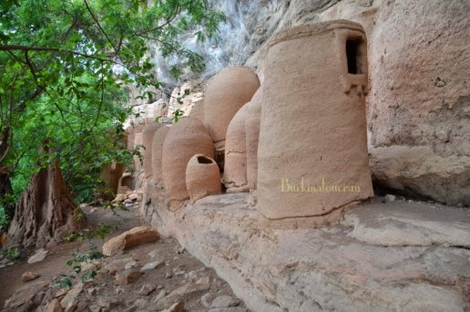

Présentation
Le village troglodyte de Niansogoni est un site exceptionnel situé à 40 km de Sindou, dans la province de la Léraba. Il est perché sur une falaise et offre une vue imprenable sur la savane environnante. Ce village est célèbre pour ses habitations troglodytes, creusées dans la roche, qui témoignent d’un mode de vie ancestral.
Historique
Le village de Niansogoni a été fondé par dix familles Wara, une ethnie apparentée aux Sénoufos. Ces familles ont choisi cet emplacement pour se protéger des guerres tribales et des invasions. Grâce à sa position stratégique sur une falaise, le village servait de forteresse naturelle contre les attaques. Les Wara étaient surnommés "les panthères" par les guerriers samoriens, en raison de leur résistance et de leur agilité. Les derniers habitants ont quitté le site en 1980, ce qui explique son excellent état de conservation. Aujourd’hui, le village est un trésor du patrimoine touristique de la région des Cascades.
Informations Pratiques
Visite guidée obligatoire : Pour préserver le site, les visites doivent être accompagnées d’un guide local.
Randonnée et ascension : L’accès au village nécessite une montée sur la falaise, offrant une vue spectaculaire.
Observation du patrimoine : Les visiteurs peuvent voir des jarres, greniers décorés, ustensiles et outils anciens.
Tarifs : Environ 7 500 FCFA pour une visite complète.